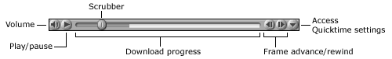

All video clips will appear
embedded in the web page, and you will find video controls
just beneath the clip itself. These controls are illustrated
below.

You can use the scrubber
to quickly move to any point in the movie by either dragging
it or clicking on the spot you want to move to. You may find
this useful in reviewing specific words and phrases.
Note: Currently all video clips are optimized for high
speed connections. However, in the future we will be making
accommodations for users at home who may have slow connections
to the internet.